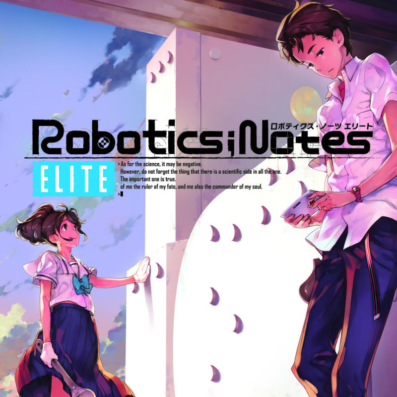
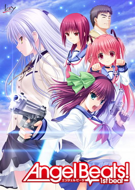
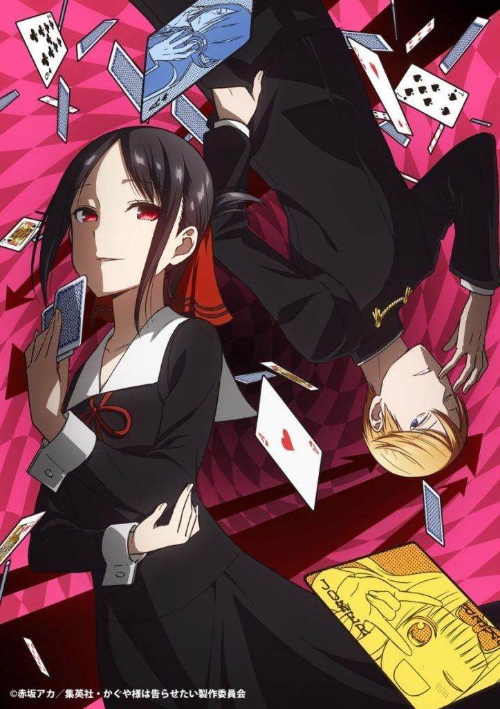
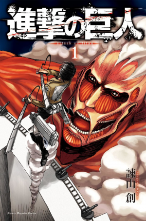
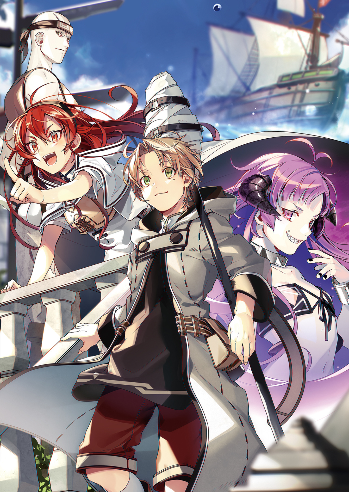
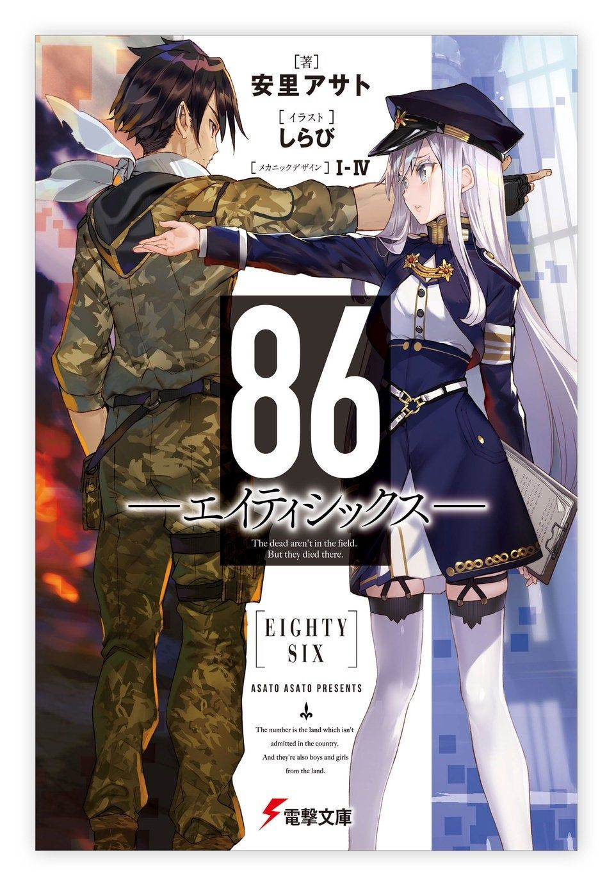

Buenas, esta es mi lista de animes favoritos hasta el momento.
Espero que les guste
Robotics;Notes

Rascal Does Not Dream of Bunny Girl Senpai (Bunny girl pa los amigos)

Angel Beats (La mamada mijo)

Violet Evergarden
.full.2228653.jpg)
Overlord (Overlordo pa los amigos)

Kaguya-sama Love is war

Shingeki no Kyojin

Mushoku Tensei Jobless Reincarnation

86

Steins;Gate